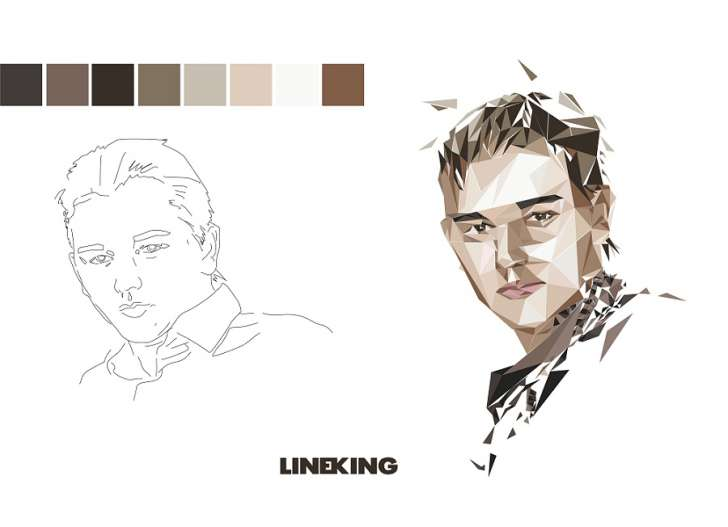
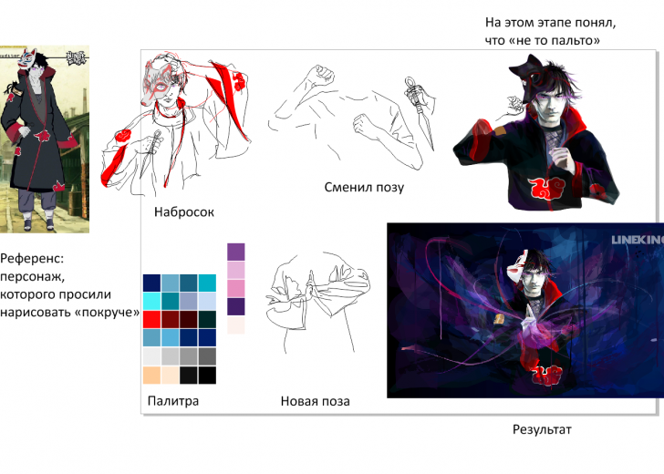

ВОПРОС / ОТВЕТ ДЛЯ НАЧИНАЮЩИХ
polzovatel-902 / 13.07.2010, 09:21/00:41
Форум:
Объясню на примере, чтоб было понятней... Открываю в кореле картинку (футболку с надписью) в формате JPG, мне нужно вытянуть из футболки надпись, т.е разъеденить файл... Говорят нужно формат изменить, еще что-то... Объясните, пожалуйста, что нужно сделать для этого...? Заранее спасибо.
Подскажиет, пожалуйста - как сделать, чтобы пантоны, назначенные в Х3, не слетали в Х5? Почему-то PANTONE Process Blue CVU, например, назначенный в Х3, в Х5 становится PANTONE Black 6 CVU 2X и т.д. :(
В 15м ,названия цветов показываются только в отдельном докере что ли ? А при наведении на окошко цвета в боковой панеле палитр нельзя заставить показывать названия ?
themadman, как я понял палитра, не нужна, а лишь образцы цвета на странице. Тогда другой вопрос- с чего начинать рисовать и как. Сколько авторов, столько и способов. Это понятно. Глядя на твою манеру изображать портрет, видно, что знаешь анатомию лица. Или всё-таки пользуешься подложкой из фотоснимка?
В 15м (и 16м) конфликтуют горячие клавиши (переключение между режимом каркас и расширенный) там"точка" в обеих клавишах в зависимости от языка. НО ! в 12м - никогда никаких конфликтов не было... Настройки одни и те же в обеих версиях...Что это может быть ? Задолбался уже ...
ector, да, с анатомией немного знаком, гипс, маски эмоций, все проходил по самоучителям :) Я начинаю с наброска линиями (outline) всего рисунка, хотя результат может в итоге полностью отличаться от первоначального наброска. Затем создаю "палитру" (образцы цветов).
Вот несколько примеров как я работаю:
На эскизе Сашка (знакомый) получился полным и прическа не его, по ходу дела (рисования) все поправил, а рубашку заменил "арафаткой", хоть и не понятно сразу что там :)

Тут тоже не сразу родился конечный вариант, но гамму цветов я определил 1 делом

Разумеется это все только лишь мой способ и он не эталонный, да и как Вы сказали, всех свой, но мне удобно именно так работать.
Да, результат получился впечатляющим. по цветовым пятнам вышло грамотно. Спасибо.
themadman у меня ещё одна проблема. может работал с форматом ai. Мне нужно отправить макет на печать, но с переводом в cdr проблемы. Цвет и тональность меняются.
при сохранении нужно поставить галочку "embed color profile", но и это не всегда 100% гарантия
Добрый день всем)) Люди ктонить может пере сохранить небольшой файл 3 метра из Х6 в Х4 ? зарание спасибо!
так и где подопытный?
Внешняя ссылка вот он))
Страницы